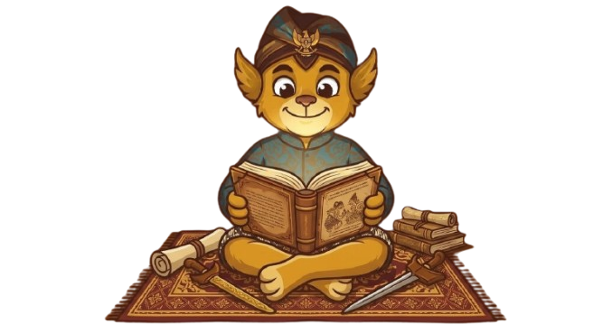

Diwariskan lewat tutur, dijaga lewat cerita.
Legenda, mitos, dongeng, dan fabel dibaca perlahan, satu babak setiap kali.

9 cerita
Gunakan pencarian, jenis, dan daerah untuk menemukan cerita.
Belum ada cerita yang cocok.
Ubah kata pencarian atau pilih kategori dan daerah lain.